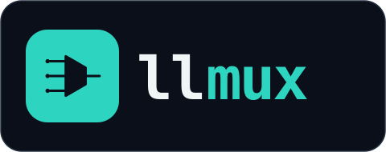
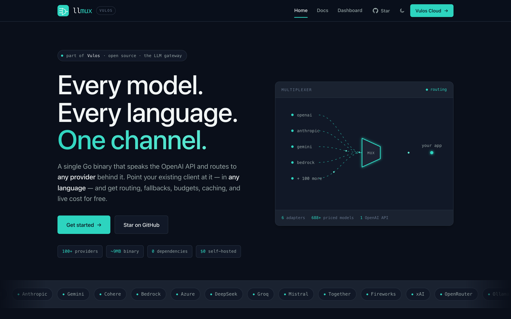

The sovereign OpenAI-compatible endpoint — your AI runs on your box.
A single Go binary that speaks the OpenAI HTTP API and routes every request to the provider behind it. Point your existing OpenAI SDK at llmux and get routing, fallbacks, per-key budgets, caching, and live cost — across every provider, with zero per-language code. Inference runs on your box by default, and a request is never silently sent off the box unless you explicitly, loggably opt in.

One channel to every model
Every language already ships a mature OpenAI client that accepts a custom base_url. Point it at llmux and the routing, budgets, caching, and cost accounting happen underneath — no new SDK to learn.
Sovereignty gate
A default-deny egress gate runs before every dispatch. No request leaves the box for a remote provider unless you set allow_egress or declare a sovereign/brokered tier on it. Fails closed; every permitted off-box call is logged with its tier.
OpenAI-compatible API
chat/completions, embeddings, models, plus responses, rerank, moderations, images, and audio. Works with any OpenAI SDK unchanged, and streamed responses are byte-identical SSE so every language's stream parser just works.
Multi-provider routing
Native adapters for Anthropic, Gemini, Cohere, Bedrock, and Azure — plus passthrough for any OpenAI-shaped upstream. Model aliases, provider/model prefixes, wildcards, catch-all routes, fallback chains with retries, and least-cost selection.
Virtual keys & budgets
Per-key USD budgets, RPM limits, and model allow-lists. Over budget returns 402, over the RPM limit 429. Spend persists to Postgres (tokens hashed at rest), rate limits ride Redis. Caches are scoped per key, so keys never see each other's completions.
Caching & live cost
Exact-match (LRU + TTL) and semantic (embedding-similarity) caching, in-memory or shared via Redis. A built-in price seed works offline and auto-syncs from OpenRouter + LiteLLM; cost appears in each response's usage.
Embedded dashboard
Usage by model, key budgets, and the live catalog — served from the binary at /ui via go:embed. No separate service, no extra deploy. Constant-time auth, size/body limits, Prometheus /metrics, structured logs, and /health are on by default.
Quick start
Build the binary — it embeds the web UI — point it at a config, and set your provider keys. No account to create, no database required for a single replica.
# 1. Build the binary (embeds the web UI) make build # 2. Configure providers export OPENAI_API_KEY=... export ANTHROPIC_API_KEY=... # 3. Run — gateway on :4000, dashboard at /ui cp llmux.example.json llmux.json ./dist/llmux -config llmux.json
- 1BuildGo 1.25+ (Node only to rebuild the embedded UI). One binary, no required runtime dependencies — or use the
Dockerfile. - 2ConfigureDeclare providers in JSON, or set provider env vars and let llmux auto-detect them — including an on-box
localprovider from Ollama/llama.cpp. - 3Point your SDK at itSet
base_url = http://localhost:4000/v1and a virtual key. Themodelstring selects the route;usagecarries per-request cost.
Sovereign by default
Most LLM gateways route your prompts to someone else's cloud. llmux inverts that: inference stays on your box until you deliberately let a request leave it — and when it does, the call is logged with the tier you approved.
Default-deny egress
A loopback or unix-socket base_url is local and always allowed. Any off-box endpoint is blocked until you opt it in, per provider. A blocked provider is never dialed — the request gets a 403 and the denial is counted in llmux_egress_blocked_total.
Four explicit tiers
Opt a provider in as local, sovereign (an off-box endpoint you vouch for), brokered (a named no-train third party), or plain external via allow_egress. A sovereignty-blocked primary is skipped so a local fallback can still serve.
No telemetry, no lock-in
Self-hosted and open source, with the admin dashboard inside the binary. An optional control-plane seam adds centralized billing when you want it and is invisible when you don't — the same binary, either way.
Part of Vulos
Vulos is a family of open, self-hostable apps. llmux is the sovereign AI gateway every Vulos product's AI features call — and it's fully standalone: any non-Vulos app just points its OpenAI client at base_url = http://<host>:4000/v1 with a virtual key.